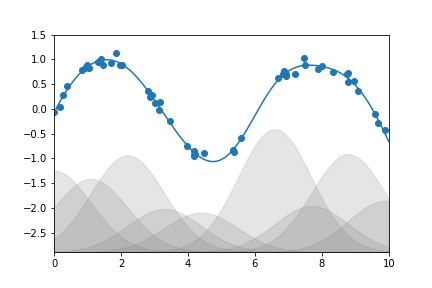

Bu sayfa orijinal kitap bölümünün eksiksiz Türkçe uyarlamasıdır — atlanan başlık/kod yoktur. Zor yerlerde ek ders notu ve 🧪 Şimdi deneyin kutuları vardır.
Orijinal (EN): 05.06 Linear Regression · Jupyter notebook
5.6 Derinlemesine: Doğrusal Regresyon
Orijinal: 05.06 Linear Regression
Derinlemesine: Naive Bayes Sınıflandırması bölümünde tartışıldığı gibi naive Bayes sınıflandırma görevleri için iyi bir başlangıç noktasıysa, doğrusal regresyon modelleri regresyon görevleri için iyi bir başlangıç noktasıdır. Bu modeller hızlı uydurulabildiği ve yorumlanması kolay olduğu için popülerdir. En basit doğrusal regresyon modeline (iki boyutlu veriye düz çizgi uydurma) zaten aşinasınız; ancak bu modeller daha karmaşık veri davranışını modellemek için genişletilebilir.
Bu bölümde bu iyi bilinen problemin matematiğine kısa bir bakıştan başlayıp doğrusal modellerin daha karmaşık örüntüleri nasıl hesaba katacak şekilde genellenebileceğini göreceğiz.
Standart içe aktarmalarla başlayalım:
%matplotlib inline
import matplotlib.pyplot as plt
plt.style.use('seaborn-whitegrid')
import numpy as npBasit Doğrusal Regresyon
En tanıdık doğrusal regresyonla, veriye düz çizgi uydurmayla başlayacağız. Düz çizgi uyumu şu biçimde bir modeldir: $$y = ax + b$$ Burada $a$ genelde eğim, $b$ genelde kesişim (intercept) olarak bilinir.
Eğimi 2, kesişimi −5 olan bir doğru etrafında dağılmış aşağıdaki veriyi düşünün (aşağıdaki şekil):
rng = np.random.RandomState(1)
x = 10 * rng.rand(50)
y = 2 * x - 5 + rng.randn(50)
plt.scatter(x, y);Scikit-Learn'ün LinearRegression tahmin edicisiyle bu veriye uyum yapıp en iyi uyum doğrusunu oluşturabiliriz (aşağıdaki şekil):
from sklearn.linear_model import LinearRegression
model = LinearRegression(fit_intercept=True)
model.fit(x[:, np.newaxis], y)
xfit = np.linspace(0, 10, 1000)
yfit = model.predict(xfit[:, np.newaxis])
plt.scatter(x, y)
plt.plot(xfit, yfit);Verinin eğim ve kesişimi modelin uyum parametrelerinde saklanır; Scikit-Learn'de bunlar her zaman sondaki alt çizgiyle işaretlenir.
İlgili parametreler coef_ ve intercept_:
print("Model slope: ", model.coef_[0])
print("Model intercept:", model.intercept_)Sonuçların veriyi üretmek için kullanılan değerlere (eğim 2, kesişim −1) çok yakın olduğunu görüyoruz; umarız beklediğimiz gibidir.
model.coef_ çok boyutlu regresyonda vektör, intercept_ skalerdir. Tek öznitelikte coef_[0] eğimdir.
LinearRegression tahmin edicisi bundan çok daha yeteneklidir — basit düz çizgi uyumlarına ek olarak çok boyutlu doğrusal modelleri de işleyebilir:
$$y = a_0 + a_1 x_1 + a_2 x_2 + \cdots$$
Birden fazla $x$ değeri vardır.
Geometrik olarak bu, üç boyutta düzleme veya daha yüksek boyutlarda hiperdüzleme nokta uydurmaya benzer.
Çok boyutlu regresyonlar görselleştirmeyi zorlaştırır; ancak NumPy'nin matris çarpım operatörüyle örnek veri oluşturarak böyle bir uydurmayı görebiliriz:
rng = np.random.RandomState(1)
X = 10 * rng.rand(100, 3)
y = 0.5 + np.dot(X, [1.5, -2., 1.])
model.fit(X, y)
print(model.intercept_)
print(model.coef_)Burada $y$ verisi üç rastgele $x$ değerinin doğrusal birleşiminden oluşturulmuş; doğrusal regresyon veriyi oluşturmak için kullanılan katsayıları geri kazanmıştır.
Bu şekilde tek bir LinearRegression tahmin edicisiyle verimize doğru, düzlem veya hiperdüzlem uydurabiliriz.
Bu yaklaşım değişkenler arasında yalnızca doğrusal ilişkilere sınırlı gibi görünse de bunu da gevşetebiliriz.
Temel Fonksiyon Regresyonu
Doğrusal regresyonu değişkenler arasındaki doğrusal olmayan ilişkilere uyarlamak için kullanabileceğiniz bir numara, veriyi temel fonksiyonlara (basis functions) göre dönüştürmektir.
Hiperparametreler ve Model Doğrulama ve Öznitelik Mühendisliği bölümlerinde kullanılan PolynomialRegression pipeline'ında bunun bir sürümünü görmüştük.
Fikir, çok boyutlu doğrusal modelimizi almak:
$$y = a_0 + a_1 x_1 + a_2 x_2 + a_3 x_3 + \cdots$$
ve tek boyutlu girdimiz $x$'ten $x_1, x_2, x_3$ vb. oluşturmaktır; yani $x_n = f_n(x)$, burada $f_n()$ verimizi dönüştüren bir fonksiyondur.
Örneğin $f_n(x) = x^n$ ise model polinom regresyona dönüşür: $$y = a_0 + a_1 x + a_2 x^2 + a_3 x^3 + \cdots$$ Bu hâlâ doğrusal bir modeldir — doğrusallık katsayıların $a_n$ birbirleriyle çarpılmaması veya bölünmemesi anlamına gelir. Etkili olarak tek boyutlu $x$ değerlerimizi daha yüksek boyuta yansıttık; böylece doğrusal uyum $x$ ile $y$ arasındaki daha karmaşık ilişkileri yakalayabilir.
Polinom Temel Fonksiyonları
Bu polinom projeksiyonu yeterince yararlıdır ki Scikit-Learn'e PolynomialFeatures dönüştürücüsüyle gömülüdür:
from sklearn.preprocessing import PolynomialFeatures
x = np.array([2, 3, 4])
poly = PolynomialFeatures(3, include_bias=False)
poly.fit_transform(x[:, None])Dönüştürücü tek boyutlu dizimizi her sütunda üssü alınmış değeri içeren üç boyutlu bir diziye çevirmiştir. Bu yeni, daha yüksek boyutlu temsil doğrusal regresyona takılabilir.
Öznitelik Mühendisliği bölümünde gördüğümüz gibi bunu yapmanın en temiz yolu pipeline kullanmaktır. Bu şekilde 7. derece polinom modeli oluşturalım:
from sklearn.pipeline import make_pipeline
poly_model = make_pipeline(PolynomialFeatures(7),
LinearRegression())Bu dönüşümle doğrusal model $x$ ile $y$ arasındaki çok daha karmaşık ilişkileri uydurabilir. Örneğin gürültülü bir sinüs dalgası (aşağıdaki şekil):
rng = np.random.RandomState(1)
x = 10 * rng.rand(50)
y = np.sin(x) + 0.1 * rng.randn(50)
poly_model.fit(x[:, np.newaxis], y)
yfit = poly_model.predict(xfit[:, np.newaxis])
plt.scatter(x, y)
plt.plot(xfit, yfit);Yedinci derece polinom temel fonksiyonları kullanan doğrusal modelimiz bu doğrusal olmayan veriye mükemmel bir uyum sağlayabilir!
Gauss Temel Fonksiyonları
Elbette başka temel fonksiyonlar da mümkündür. Yararlı bir örüntü, polinom tabanlarının toplamı değil Gauss tabanlarının toplamını uyduran bir modeldir. Sonuç kabaca aşağıdaki şekildeki gibi görünebilir:

Grafikteki gölgeli bölgeler ölçeklenmiş temel fonksiyonlardır; toplandığında veriden geçen düzgün eğriyi oluştururlar. Bu Gauss temel fonksiyonları Scikit-Learn'e gömülü değildir; ancak bunları oluşturan özel bir dönüştürücü yazabiliriz (Scikit-Learn dönüştürücüleri Python sınıfları olarak uygulanır; kaynak kodunu okumak nasıl oluşturulacağını görmek için iyi bir yoldur):
from sklearn.base import BaseEstimator, TransformerMixin
class GaussianFeatures(BaseEstimator, TransformerMixin):
"""Uniformly spaced Gaussian features for one-dimensional input"""
def __init__(self, N, width_factor=2.0):
self.N = N
self.width_factor = width_factor
@staticmethod
def _gauss_basis(x, y, width, axis=None):
arg = (x - y) / width
return np.exp(-0.5 * np.sum(arg ** 2, axis))
def fit(self, X, y=None):
# create N centers spread along the data range
self.centers_ = np.linspace(X.min(), X.max(), self.N)
self.width_ = self.width_factor * (self.centers_[1] - self.centers_[0])
return self
def transform(self, X):
return self._gauss_basis(X[:, :, np.newaxis], self.centers_,
self.width_, axis=1)
gauss_model = make_pipeline(GaussianFeatures(20),
LinearRegression())
gauss_model.fit(x[:, np.newaxis], y)
yfit = gauss_model.predict(xfit[:, np.newaxis])
plt.scatter(x, y)
plt.plot(xfit, yfit)
plt.xlim(0, 10);Bu örneği yalnızca polinom temel fonksiyonlarında sihir olmadığını netleştirmek için ekledim: verinizin üretim sürecine dair sezginiz bir temelin diğerinden daha uygun olduğunu düşündürüyorsa onu kullanabilirsiniz.
Düzenlileştirme
Doğrusal regresyona temel fonksiyonları eklemek modeli çok daha esnek yapar; ancak çok hızlı aşırı uyuma yol açabilir (Hiperparametreler ve Model Doğrulama bölümüne bakın). Örneğin çok sayıda Gauss temel fonksiyonu kullanırsak aşağıdaki şekilde olur:
model = make_pipeline(GaussianFeatures(30),
LinearRegression())
model.fit(x[:, np.newaxis], y)
plt.scatter(x, y)
plt.plot(xfit, model.predict(xfit[:, np.newaxis]))
plt.xlim(0, 10)
plt.ylim(-1.5, 1.5);Veri 30 boyutlu temele yansıtıldığında model fazla esnektir ve veriyle kısıtlandığı noktalar arasında aşırı değerlere gider. Bunun nedenini Gauss temellerinin katsayılarını konumlarına göre çizersek görebiliriz (aşağıdaki şekil):
def basis_plot(model, title=None):
fig, ax = plt.subplots(2, sharex=True)
model.fit(x[:, np.newaxis], y)
ax[0].scatter(x, y)
ax[0].plot(xfit, model.predict(xfit[:, np.newaxis]))
ax[0].set(xlabel='x', ylabel='y', ylim=(-1.5, 1.5))
if title:
ax[0].set_title(title)
ax[1].plot(model.steps[0][1].centers_,
model.steps[1][1].coef_)
ax[1].set(xlabel='basis location',
ylabel='coefficient',
xlim=(0, 10))
model = make_pipeline(GaussianFeatures(30), LinearRegression())
basis_plot(model)Bu şeklin alt paneli her konumdaki temel fonksiyonun genliğini gösterir. Temel fonksiyonlar örtüştüğünde tipik aşırı uyum davranışı budur: bitişik temellerin katsayıları şişer ve birbirini iptal eder. Bu davranışın sorunlu olduğunu biliyoruz; model parametrelerinin büyük değerlerini cezalandırarak bu sıçramaları açıkça sınırlamak güzel olurdu. Böyle bir ceza düzenlileştirme (regularization) olarak bilinir; birkaç biçimi vardır.
Ridge Regresyon ($L_2$ Düzenlileştirme)
Belki en yaygın düzenlileştirme biçimi ridge regresyon veya $L_2$ düzenlileştirme (bazen Tikhonov düzenlileştirme) olarak bilinir.
Model katsayıları $\theta_n$'nin kareler toplamını (2-norm) cezalandırır. Bu durumda uyum cezası:
$$P = \alpha\sum_{n=1}^N \theta_n^2$$
$\alpha$ cezanın gücünü kontrol eden serbest parametredir.
Bu tür cezalı model Scikit-Learn'de Ridge tahmin edicisiyle gömülüdür (aşağıdaki şekil):
from sklearn.linear_model import Ridge
model = make_pipeline(GaussianFeatures(30), Ridge(alpha=0.1))
basis_plot(model, title='Ridge Regression')$\alpha$ parametresi esasen ortaya çıkan modelin karmaşıklığını kontrol eden bir düğmedir. $\alpha \to 0$ limitinde standart doğrusal regresyon sonucunu elde ederiz; $\alpha \to \infty$ limitinde tüm model yanıtları baskılanır. Ridge regresyonun bir avantajı çok verimli hesaplanabilmesidir — neredeyse orijinal doğrusal regresyon maliyetinden fazla değildir.
Ridge ile polinom regresyonda aşırı uyumu azaltmayı deneyin:
import numpy as np
from sklearn.linear_model import Ridge
from sklearn.preprocessing import PolynomialFeatures
from sklearn.pipeline import make_pipeline
rng = np.random.RandomState(0)
x = rng.rand(30)
y = np.sin(2 * np.pi * x) + 0.1 * rng.randn(30)
X = x[:, np.newaxis]
model = make_pipeline(PolynomialFeatures(10), Ridge(alpha=1e-3))
model.fit(X, y)
print("R^2:", model.score(X, y))Lasso Regresyon ($L_1$ Düzenlileştirme)
Bir başka yaygın düzenlileştirme lasso regresyon veya L1 düzenlileştirmedir; regresyon katsayılarının mutlak değerler toplamını (1-norm) cezalandırır: $$P = \alpha\sum_{n=1}^N |\theta_n|$$ Kavramsal olarak ridge'e çok benzer olsa da sonuçlar şaşırtıcı biçimde farklı olabilir. Örneğin yapısı nedeniyle lasso regresyon mümkün olduğunda seyrek modelleri tercih eder: birçok model katsayısını tam olarak sıfıra ayarlar.
Önceki örneği L1-normalize katsayılarla tekrarlarsak bunu görebiliriz (aşağıdaki şekil):
from sklearn.linear_model import Lasso
model = make_pipeline(GaussianFeatures(30), Lasso(alpha=0.001, max_iter=2000))
basis_plot(model, title='Lasso Regression')Lasso regresyon cezasıyla katsayıların çoğu tam olarak sıfırdır; işlevsel davranış mevcut temel fonksiyonların küçük bir alt kümesiyle modellenir. Ridge düzenlileştirmede olduğu gibi $\alpha$ parametresi cezanın gücünü ayarlar ve örneğin çapraz doğrulama ile belirlenmelidir (Hiperparametreler ve Model Doğrulama bölümüne bakın).
Örnek: Bisiklet Trafiği Tahmini
Örnek olarak Seattle Fremont Köprüsü'nden geçen bisiklet yolculuk sayısını hava durumu, mevsim ve diğer faktörlere göre tahmin edip edemeyeceğimize bakalım. Bu veriyi Zaman Serileri bölümünde görmüştük; burada bisiklet verisini başka bir veri kümesiyle birleştirip hava durumu ve mevsimsel faktörlerin — sıcaklık, yağış ve gün ışığı süresi — bisiklet trafiğini ne ölçüde etkilediğini anlamaya çalışacağız. Neyse ki NOAA günlük hava istasyonu verisini yayınlar — istasyon USW00024233 — ve Pandas ile iki kaynağı kolayca birleştirebiliriz. Hava ve diğer bilgileri bisiklet sayılarıyla ilişkilendirmek için basit doğrusal regresyon yapacağız; böylece bu parametrelerden birindeki değişimin belirli bir gündeki yolcu sayısını nasıl etkilediğini tahmin edebiliriz.
Özellikle bu, Scikit-Learn araçlarının istatistiksel modelleme çerçevesinde kullanılabileceği bir örnektir; model parametrelerinin yorumlanabilir anlamları olduğu varsayılır. Daha önce tartışıldığı gibi bu makine öğrenmesi içinde standart bir yaklaşım değildir; ancak bazı modeller için böyle yorum mümkündür.
İki veri kümesini tarihe göre indeksleyerek yükleyerek başlayalım:
# url = 'https://raw.githubusercontent.com/jakevdp/bicycle-data/main'
# !curl -O {url}/FremontBridge.csv
# !curl -O {url}/SeattleWeather.csvimport pandas as pd
counts = pd.read_csv('FremontBridge.csv',
index_col='Date', parse_dates=True)
weather = pd.read_csv('SeattleWeather.csv',
index_col='DATE', parse_dates=True)Basitlik için COVID-19 salgınının Seattle'daki ulaşım alışkanlıklarını önemli ölçüde etkilediği 2020 sonrası etkilerden kaçınmak için 2020 öncesi veriye bakalım:
counts = counts[counts.index < "2020-01-01"]
weather = weather[weather.index < "2020-01-01"]Ardından günlük toplam bisiklet trafiğini hesaplayıp kendi DataFrame'ine koyalım:
daily = counts.resample('d').sum()
daily['Total'] = daily.sum(axis=1)
daily = daily[['Total']] # remove other columnsDaha önce kullanım örüntülerinin günden güne değiştiğini görmüştük. Veriye haftanın gününü gösteren ikili sütunlar ekleyelim:
days = ['Mon', 'Tue', 'Wed', 'Thu', 'Fri', 'Sat', 'Sun']
for i in range(7):
daily[days[i]] = (daily.index.dayofweek == i).astype(float)Benzer şekilde tatillerde sürücülerin farklı davrandığını bekleyebiliriz; bunun için de bir gösterge ekleyelim:
from pandas.tseries.holiday import USFederalHolidayCalendar
cal = USFederalHolidayCalendar()
holidays = cal.holidays('2012', '2020')
daily = daily.join(pd.Series(1, index=holidays, name='holiday'))
daily['holiday'].fillna(0, inplace=True)Gün ışığı süresinin kaç kişinin bisiklete bindiğini etkileyebileceğinden şüphelenebiliriz. Standart astronomik hesapla bu bilgiyi ekleyelim (aşağıdaki şekil):
def hours_of_daylight(date, axis=23.44, latitude=47.61):
"""Compute the hours of daylight for the given date"""
days = (date - pd.datetime(2000, 12, 21)).days
m = (1. - np.tan(np.radians(latitude))
* np.tan(np.radians(axis) * np.cos(days * 2 * np.pi / 365.25)))
return 24. * np.degrees(np.arccos(1 - np.clip(m, 0, 2))) / 180.
daily['daylight_hrs'] = list(map(hours_of_daylight, daily.index))
daily[['daylight_hrs']].plot()
plt.ylim(8, 17)Ortalama sıcaklık ve toplam yağışı da ekleyebiliriz. Yağış inch cinsine ek olarak günün kuru olup olmadığını (sıfır yağış) gösteren bir bayrak ekleyelim:
weather['Temp (F)'] = 0.5 * (weather['TMIN'] + weather['TMAX'])
weather['Rainfall (in)'] = weather['PRCP']
weather['dry day'] = (weather['PRCP'] == 0).astype(int)
daily = daily.join(weather[['Rainfall (in)', 'Temp (F)', 'dry day']])Son olarak 1. günden artan ve kaç yıl geçtiğini ölçen bir sayaç ekleyelim. Bu, gözlemlenen yıllık günlük geçiş artış veya azalışını ölçmemizi sağlar:
daily['annual'] = (daily.index - daily.index[0]).days / 365.Verimiz hazır; bir göz atalım:
daily.head()Bu hazır olduktan sonra kullanılacak sütunları seçip verimize doğrusal regresyon uydurabiliriz.
fit_intercept=False ayarlayacağız çünkü günlük bayraklar esasen kendi gün özel kesişimleri gibi çalışır:
# Drop any rows with null values
daily.dropna(axis=0, how='any', inplace=True)
column_names = ['Mon', 'Tue', 'Wed', 'Thu', 'Fri', 'Sat', 'Sun',
'holiday', 'daylight_hrs', 'Rainfall (in)',
'dry day', 'Temp (F)', 'annual']
X = daily[column_names]
y = daily['Total']
model = LinearRegression(fit_intercept=False)
model.fit(X, y)
daily['predicted'] = model.predict(X)Son olarak toplam ve tahmin edilen bisiklet trafiğini görsel olarak karşılaştırabiliriz (aşağıdaki şekil):
daily[['Total', 'predicted']].plot(alpha=0.5);Veri ile model tahminlerinin tam örtüşmemesinden bazı önemli öznitelikleri kaçırdığımız açıktır. Ya özniteliklerimiz eksiktir (insanlar yalnızca bunlara göre değil daha fazlasına göre karar verir) ya da hesaba katmadığımız doğrusal olmayan ilişkiler vardır (örneğin hem yüksek hem düşük sıcaklıkta daha az binme). Yine de kaba yaklaşımımız içgörü vermeye yeter; doğrusal modelin katsayılarına bakarak her özniteliğin günlük bisiklet sayısına ne kadar katkıda bulunduğunu tahmin edebiliriz:
params = pd.Series(model.coef_, index=X.columns)
paramsBu sayıları belirsizlik ölçüsü olmadan yorumlamak zordur. Bootstrap yeniden örnekleme ile bu belirsizlikleri hızlıca hesaplayabiliriz:
from sklearn.utils import resample
np.random.seed(1)
err = np.std([model.fit(*resample(X, y)).coef_
for i in range(1000)], 0)Bu hatalar tahmin edildikten sonra sonuçlara tekrar bakalım:
print(pd.DataFrame({'effect': params.round(0),
'uncertainty': err.round(0)}))Buradaki effect sütunu kabaca söz konusu öznitelikteki değişimin yolcu sayısını nasıl etkilediğini gösterir.
Örneğin haftanın günü açık bir ayrım gösterir: hafta sonlarında hafta içine göre binlerce daha az yolcu vardır.
Ek her gün ışığı saati başına 409 ± 26 kişinin bisikleti seçtiğini, bir Fahrenheit derece artışının 179 ± 7 kişiyi teşvik ettiğini, kuru günün ortalama 2.111 ± 101 ek yolcu, her inch yağmurun 2.790 ± 186 yolcuyu başka ulaşım moduna yönlendirdiğini görüyoruz.
Tüm bu etkiler hesaba katıldığında yılda 324 ± 22 yeni günlük yolcu artışı görüyoruz.
Basit modelimiz neredeyse kesinlikle ilgili bilgileri kaçırıyor. Örneğin daha önce belirtildiği gibi doğrusal olmayan etkiler (yağış ve soğuk sıcaklık etkileri) ve her değişken içindeki doğrusal olmayan eğilimler (çok soğuk ve çok sıcakta binme isteksizliği) basit doğrusal modelde hesaba katılamaz. Ayrıca daha ince ayrıntılı bilgiyi attık (yağmurlu sabah ile yağmurlu öğleden sonra farkı) ve günler arası korelasyonları yok saydık (yağmurlu salının çarşamba sayısına etkisi veya yağmurlu günlerden sonra beklenmedik güneşli gün). Bunların hepsi ilginç olası etkilerdir; artık keşfetmek için araçlara sahipsiniz!